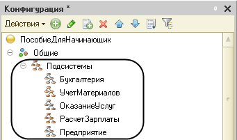
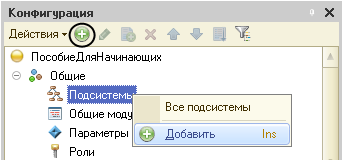
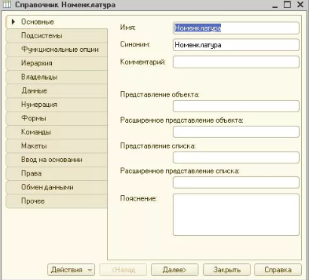

Подсистема
Подсистемы — это основные элементы для построения интерфейса «1С:Предприятия». Поэтому первый, этап при разработки конфигурации — это проектирование состава подсистем.
При этом стоит очень важная и ответственная задача - необходимо тщательно продумать состав подсистем и осмысленно привязать к подсистемам, которые он будет создавать.
Объекты конфигурации «Подсистема» позволяют выделить в конфигурации функциональные части, на которые логически разбивается создаваемое прикладное решение. 
Создание подсистемы
Чтобы создать новые подсистемы, необходимо раскрыть ветвь «Общие» в дереве объектов конфигурации и нажать на «+». В появившемя окне необходимо выделить ветвь Подсистемы, и вызовать её контекстное меню, выбрав пункт «Добавить». 
После этого система откроет окно редактирования объекта конфигурации. Оно предназначено специально для сложных объектов конфигурации и позволяет путем выполнения последовательных действий быстро создавать такие объекты. 